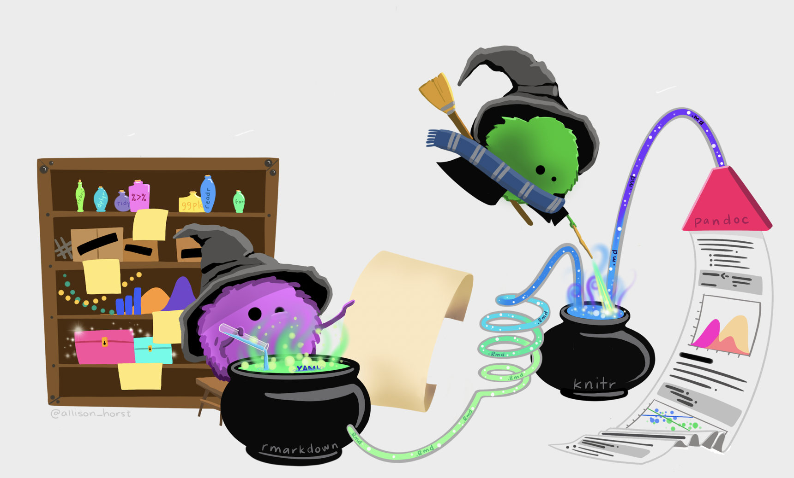

Semester Project
The best part of the semester: the awesome data-based group project!
Project Instructions
Important dates:
- 3/29/22 (Tuesday) Project 1: Pilot
- 4/5/22 (Tuesday) Project 2: Power
- 4/19/22 (Tuesday) Project 3: Preliminary Analysis
- 5/3/22 (Tuesday) Project 4: Full draft
- 5/6 or 13/22 (Friday) Project presentation
- 5/13/22 (Friday) Project 5: Final (edited) Project
Pilot
The pilot project will be based on a preliminary data collection. Details about the structure of the data are given in the assignment, note that the response variable must be numerical. You will have an opportunity to collect more data as we go, but the better the original data are, the better the follow-up data collection will be. The goal of the pilot study assignment is to develop a preliminary research question and to collect some initial data, both in preparation for your group Island project.
Power
The power analysis will use the pilot data to estimate the sample size which will be needed to see the effect of interest. Most of the code will be written by the professor, but you will need to understand both why the power analysis is important and how the power analysis is implemented. The goal of the power analysis assignment is to estimate how many observations are needed for an Islands project to reach significance.
Preliminary Analysis
The preliminary analysis will contain numerical and graphical summaries. Additionally, one regression model should be run. The goal of the preliminary data analysis assignment is to start working with the variables including visualizations, numerical summaries, and modeling.
Full Draft
The complete draft of the project will contain a full set of analyses designed to answer the research question (and practice with multiple regression). The paper will continue to have sections which communicate the study background and methods to the reader. All plots and tables should be well labelled. The goal of the assignment is to provide a complete analysis of the data collected on the Islands as a research project.
Presentation
The presentation will bring together your work and showcase your ideas. You will have 5 minutes to report on your study, using slides (visualizations from your analyses). Each group member will be expected to talk. The goal of this assignment is to synthesize your study and your results into a clear and succinct presentation to your peers.
Your group may choose whether to present during reading days (May 6, 2022) or during the time allocated to our course for the final exam (May 13, 2022).
Final Project
The final project will compile all of the project pieces together into a beautiful and clear report. The paper will have sections which communicate the study background and methods to the reader as well a conclusions of the experiment. All plots and tables should be well labelled. The goal of the assignment is to provide a complete analysis of the data collected on the Islands as a research project.
Along with the final project report, each student will fill out an individual reflection piece and a group dynamic report.